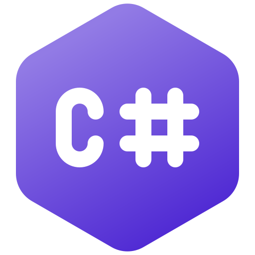
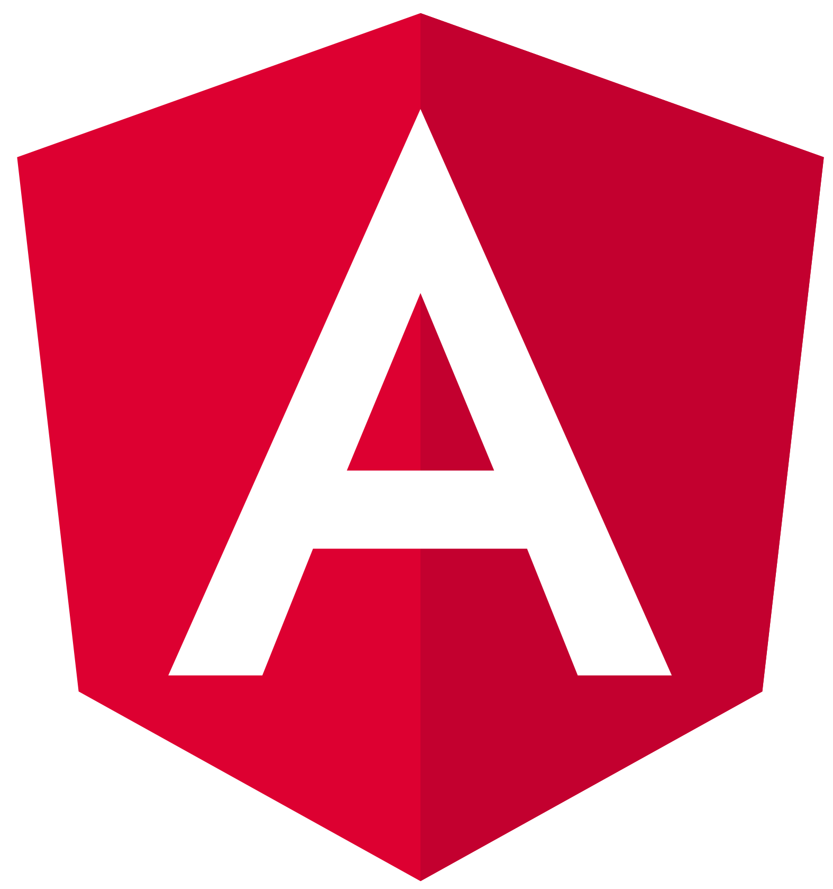

Sobre mi
Mi nombre es Pablo Musaber, soy Ingeniero en Sistemas de Información egresado de la Universidad Tecnológica Nacional y vivo en Mendoza, Argentina.
Soy una persona productiva y proactiva, con excelentes habilidades comunicativas. Disfruto del trabajo en equipo y de colaborar en la resolución de problemas.
Tengo un especial interés por la creación de aplicaciones y la automatización de procesos, lo que me llevó a desempeñarme laboralmente como desarrollador de software fullstack, con un especial interés en el backend.
Tecnologías

C#

.NET

Angular
Trayectoria
Bromus Software
Desarrollador Fullstack
Febrero 2024 — Actualidad
Actualmente, me encuentro trabajando como desarrollador fullstack en un proyecto para un importante cliente industrial dentro del rubro metalúrgico/siderúrgico, utilizando .NET Core y Angular como tecnologías principales.
Aldibs Software Solutions
Pasante | Desarrollador part time
Julio 2023 — Enero 2024 · 7 meses
A mediados de mi último año de ingeniería comencé mi carrera como desarrollador ingresando como pasante en una software factory de mi ciudad, donde tuve la oportunidad de trabajar en diversos proyectos utilizando las tecnologías Ruby on Rails, Java y AngularJS.
Microblue Computación
Técnico de Computación
2019 — Junio de 2023 · 4 años
Durante todos mis años de estudio universitario, trabajé a tiempo parcial en un taller de computación, brindando servicio técnico de computadoras, notebooks e impresoras. Esta experiencia me permitió desarrollar competencias ligadas a la resolución de problemas, así como también habilidades relacionadas con la comunicación, el trabajo en equipo y el diálogo con clientes.